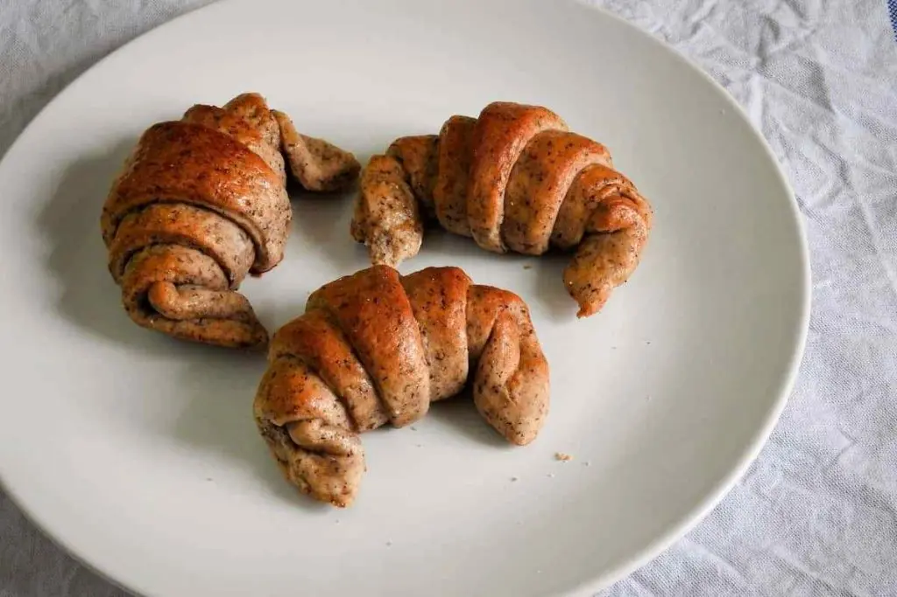

Medialunas integrales sin gluten
No vas a querer pisar una panaderia nunca mas

Ingredientes
- 150g de harina de trigo de sarraceno.
- 50g de harina de garbanzo.
- 150g de fecula de mandioca.
- 150g de harina de arroz integral.
- 50g de almidon de maiz.
- 4g de goma xantica (1 cucharadita).
- 4g de psyllium (1 cucharadita).
- 140g de azucar.
- 130g de manteca.
- 100 cc de leche tibia.
- 1 huevo.
- 100 cc de agua tibia.
- 1 cucharadita de esencia de vainilla.
- 25g de levadura de fresca o 10g de levadura seca.
- 1 pizca de sal.
- 1 huevo para pintar.
- Extra de agua tibia.
Paso a paso de como hacer medialunas integrales sin gluten 100% real no fake